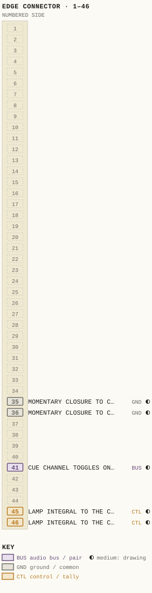
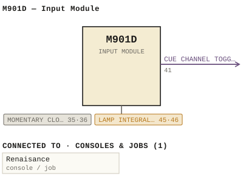

M901D — Input Module
| Type | module |
| Category | UNSORTED |
| Try it | simulator & front panel · download package (zip) |
| Earliest dated evidence | 1995|28 — manual issue date |
| Evidence | "Issue #1 December 7, 1995" in WBSps Engineering from H drive-20261018T013433Z-1-002/WBSps Engineering from H drive/WBSps - Word Perfect Manuals/M901D.WP |
| Confidence | high |
| All years found | 1995|28 |
| Used in jobs | Renaisance |
| Variants | M901, M901A, M901B, M901BY, M901C, M901CY, M901NW |
| Folder | DOCUMENTS/RECENT SCANS/XXX - was re-scanned - WBPS Scans - SAMPSON - 2319.2KG -20210301T215225Z-001 |
| Folder | Modules/UNSORTED/M901D |
Connections
What it is made of and what it is part of.
Pictures


M901D.pinout.svg

M901D.connections.svg 19xx - DOC - File_057.png
19xx - DOC - File_057.png 1995 - 950361 - DOC - 950361-04-001 - HEADPHONE HUTE STUDIO HUTE TKBUAKOQ HONTOR.jpg
1995 - 950361 - DOC - 950361-04-001 - HEADPHONE HUTE STUDIO HUTE TKBUAKOQ HONTOR.jpgPinout & connections
Each contact as its own documents name it: 5 named (5 medium confidence). An empty slot is a contact no page names. Hover a contact for its source; the table under the drawing lists them.
pinout (SVG) · connections (SVG) · pins (JSON)
Pin evidence — 5 contacts
| Pin | Signal | Kind | Confidence | Read from | Source |
|---|---|---|---|---|---|
| 35 | MOMENTARY CLOSURE TO CONTROL COMMON VIA AN | ground / common | medium | prose | 1995 - M901D - 901-01-006 - COMPONENT LAYOUT.…, p. 1 “A momentary closure to control common via an open collector transistor which follows source selection is available at module connector P2 p…” |
| 36 | MOMENTARY CLOSURE TO CONTROL COMMON VIA AN | ground / common | medium | prose | 1995 - M901D - 901-01-006 - COMPONENT LAYOUT.…, p. 1 “A momentary closure to control common via an open collector transistor which follows source selection is available at module connector P2 p…” |
| 41 | CUE CHANNEL TOGGLES ON AND OFF | audio bus / pair | medium | prose | 1995 - M901D - 901-01-006 - COMPONENT LAYOUT.…, p. 1 “This alternate action can be invoked by either momentarily closing Cue switch SW1 (Q), or momentarily grounding the external Cue control in…” |
| 45 | LAMP INTEGRAL TO THE CHANNEL OFF SWITCH | control / tally | medium | prose | 1995 - M901D - 901-01-006 - COMPONENT LAYOUT.…, p. 1 “The lamp integral to the Channel Off switch is uncommitted and available at module connector P2 pins 45 and 46.” |
| 46 | LAMP INTEGRAL TO THE CHANNEL OFF SWITCH | control / tally | medium | prose | 1995 - M901D - 901-01-006 - COMPONENT LAYOUT.…, p. 1 “The lamp integral to the Channel Off switch is uncommitted and available at module connector P2 pins 45 and 46.” |
Dates found in the documents
| Year | Kind | Text | File |
|---|---|---|---|
| 1995|28 | manual issue date | Issue #1 December 7, 1995 |
1995 - M901D - 901-01-006 - COMPONENT LAYOUT.wp |
Documents (1)
| Year | File | |
|---|---|---|
| 1995|28 | 1995 - M901D - 901-01-006 - COMPONENT LAYOUT.wp | note |
Photos & scans (2)
| Year | File | |
|---|---|---|
| ? | 19xx - DOC - File_057.png | note |
| ? | 19xx - M901D - DOC - File_057.png | note |


Parts list — board M901D (114 parts)
From M901D.WP; also in timelines/data/bom.csv.
| Ref | Part | Value | Manufacturer | Mfr part no. |
|---|---|---|---|---|
| M901D | INPUT MODULE | |||
| ATT1 | Fader | P&G | PGF3210 | |
| C1 | Capacitor | 0.1 uF/100 V | Sprague | K104K20X7RFVBWN |
| C36 | Capacitor | 47 uF/25 V | ITT | 47M25 |
| C76 | Capacitor | 47 pF | Philips | 638-34479 |
| C82 | Capacitor | 33 uF/16 V | ITT | 33M16 |
| C116 | Capacitor | 10 uF/25 V | ITT | 10M25 |
| CR1 | Diode | National | 1N4148 | |
| CR2 | delete | |||
| CR27 | Diode | National | 1N4003 | |
| CR29 | Diode | National | 1N4003 | |
| CR37,CR38 | delete | |||
| CR39 | Diode | " | 1N4003 | |
| CR49 | delete | |||
| CR50 | Diode | " | 1N4148 | |
| CR57 | delete | |||
| CR71 | delete | |||
| CR76 | delete | |||
| CR77 | Diode | " | 1N4003 | |
| DS1-DS6 | LED, Yellow | H.P | HLMP1401 | |
| DS7 | LED-T1, Red | |||
| DS8 | Lamp, Min Flange | 387 | ||
| LK1-LK20 | Connector, 3 Pin, Male | Berg | 929705-01-03 | |
| LK21-LK22 | delete | |||
| LK23 | Connector, 3 Pin, Male | Berg | 929705-01-03 | |
| LK24 | delete | |||
| LK25 | PCB Link | |||
| LK26-LK31 | Connector, 3 Pin, Male | Berg | 929705-01-03 | |
| LK32-LK37 | PCB Link | |||
| LK38 | delete | |||
| LK40-LK43 | Connector, 3Pin Maale | Berg | 929705-01-03 | |
| Q7 | Transistor | National | 2N3906 | |
| Q9 | delete | |||
| Q10 | Transistor | " | 2N3906 | |
| Q11 | delete | |||
| Q12 | Transistor | National | 2N3904 | |
| R1 | SIP Resistor | 10K | Bourns | 15-002 |
| R2 | SIP Resistor | 39K | " | 15-014 |
| R3 | Resistor | 1/4W 5% | 3K3 | Philips CR25 |
| R19 | Resistor | 1/4W 1% | 4K75 | Philips MRS25F |
| R21 | Resistor | SOT | ||
| R24 | Potentiometer | 5K | Piher | PT10H 5K |
| R25 | Resistor | 1/4W 5% | 100K | Philips CR25 |
| R36 | Potentiometer | 5K | Piher | PT10H 5K |
| R37 | Resistor | 1/4W 5% | 100K | Philips CR25 |
| R47 | Potentiometer | 500 | Piher | PT10H 500 |
| R48 | delete | |||
| R49 | Resistor | 1/4W 5% | 2K2 | Philips CR25 |
| R51 | Resistor | 1/4W 1% | 6K81 | Philips MRS25F |
| R58 | Resistor | 1/4W 5% | 300 | Philips CR25 |
| R59 | Potentiometer | 500 | Piher | PT10H 500 |
| R60 | delete | |||
| R61 | Resistor | 1/4W 5% | 2K2 | Philips CR25 |
| R71 | Resistor | 1/4W 5% | 22K | Philips CR25 |
| R73 | SIP Resistor | 10K | Bourns | 15-002 |
| R74 | Resistor | 1/4W 5% | 3K3 | Philips CR25 |
| R81 | Resustor | 1/4W 5% | 27K | Philips CR25 |
| R88 | SIP Resistor | 10K | Bourns | 15-002 |
| R89 | Resistor | 1/4W 5% | 15K | Philips CR25 |
| R91 | Resistor | 1/4W 5% | 15K | Philips CR25 |
| R93 | delete | |||
| R94 | delete | |||
| R95 | delete | |||
| R96 | delete | |||
| R97 | Resistor | 1/4W 5% | 15K | Philips CR25 |
| R101 | Resistor | 1/4W 5% | 150K | Philips CR25 |
| R104 | delete | |||
| R106 | Potentiometer | 100K | Piher | PT10V 100K |
| R107 | delete | |||
| R108 | Potentiometer | 500K | Piher | PT10V 500K |
| R109 | Resistor | 1/4W 5% | 470K | Philips CR25 |
| R111 | Resistor | 1/4W 5% | 22K | Philips CR25 |
| R113 | delete | |||
| R115 | Potentiometer | 100K | Piher | PT10V 100K |
| R116 | delete | |||
| R117 | Potentiometer | 500K | Piher | PT10V 500K |
| R118 | Resistor | 1/4W 5% | 470K | Philips CR25 |
| R121 | Resistor | 1/4W 5% | 20K | Philips CR25 |
| R123 | delete | |||
| R124 | delete | |||
| R126 | delete | |||
| R127 | delete | |||
| R129 | delete | |||
| R132 | delete | |||
| R135 | delete | |||
| R136 | Resistor | 1/4W 1% | 15K | Philips MRS25F |
| R141 | delete | |||
| R142 | delete | |||
| R143 | Resistor | 1/4W 1% | 10K | Philips MRS25F |
| R151 | Resistor | 1/4W 1% | 47K5 | Philips MRS25F |
| R161 | Resistor | 1/4W 1% | 28K7 | Philips MRS25F |
| R175 | Resistor | 1/4W 5% | 22K | Philips CR25 |
| R180 | Resistor | 1/4W 5% | 100K | Philips CR25 |
| R191 | Resistor | 1/4W 5% | 22K | Philips CR25 |
| R201 | Potentiometer | 5K | Piher | PT10V 5K |
| R202 | Resistor | 1/4W 5% | 100 | Philips CR25 |
| R211 | Resistor | 1/4W 5% | 22K | Philips CR25 |
| R220 | delete | |||
| R221 | Resistor | delete | ||
| R231 | Resistor | 1/4W 1% | 1K | Philips MRS25F |
| R241 | Potentiometer | 5K | Piher | PT10V 5K |
| R242 | Resistor | 1/4W 5% | 16K | Philips CR25 |
| R259 | Resistor | 1/4W 5% | 22K | Philips CR25 |
| R265 | Potentiometer | 5K | Piher | PT10V 5K |
| R266 | Resistor | 1/4W 5% | 4K7 | Philips CR25 |
| SW6 | A/A Switch | " | ||
| SW7 | Switch | Dialco | 554-3221-311 | |
| U1 | Integrated Circuit | National | 74HC74N | |
| U16 | Integrated Circuit | National | 74HC125N | |
| Q25, Q28 | Heatsink | Aavid | 577102 | |
| SW1-SW5 | Keycap, Black | Licon | 80-390104 | |
| SW5 | Socket, Straight Pin | " | 39-80001 | |
| SW8 | Switch, Lens, Amber | " | 325-0073 | |
| U3-U6 | 8 Pin Socket | Amp | 640463-3 |
Consoles & jobs it is connected to (1)
Their own drawings name this module.
| Job | Year | Drawing | Page |
|---|---|---|---|
| Renaisance | 1994 - Renaisance - MKI.pdf | 4 |